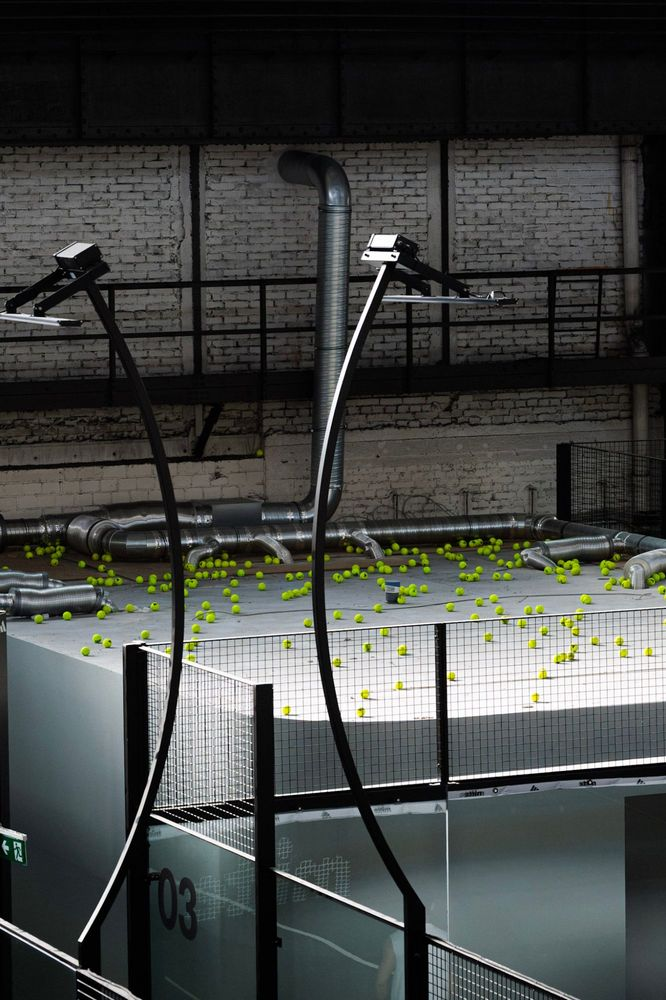
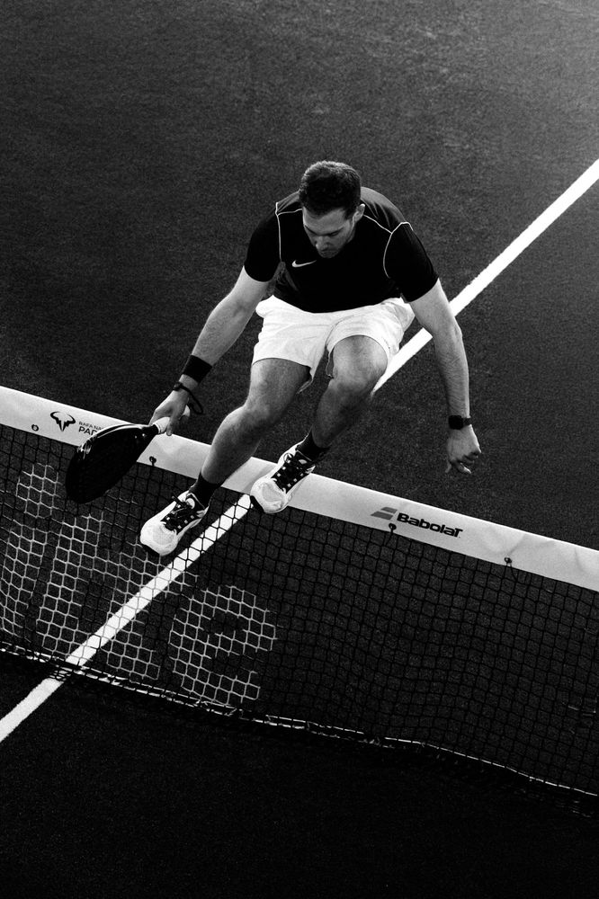
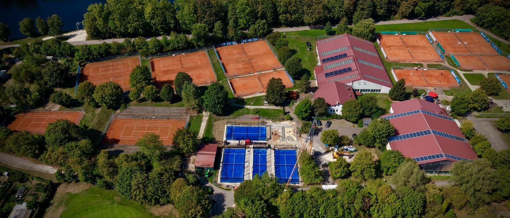
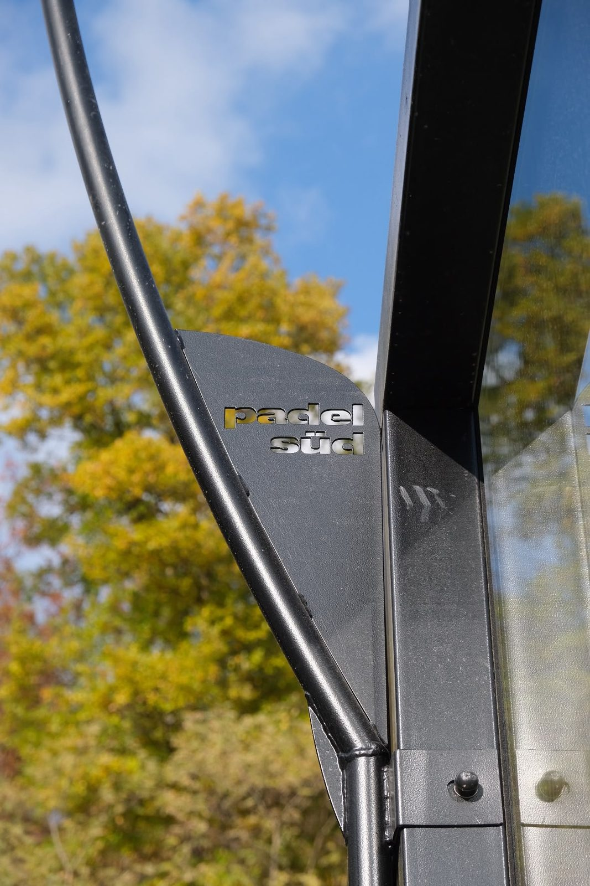

Home / Blog
Padel guide · Knowledge · PracticePadel knowledge.
Costs, permits, court systems, halls, vending machines and operation: THE COURT's padel guide sets out what we have learned from over 50 projects, for clubs, operators, hotels and municipalities.
Articles
New on the blog.

What does a padel facility really cost?
Court, foundation, hall: the three figures you need for your first calculation.
Read more →
Building a padel facility: costs, process and financing
The guide for operators, clubs and hotels: what a padel facility costs, how your project runs and how to finance it.
Read more →
Padel at a tennis club: the guide for club boards
Padel on your own grounds, without your own investment: lease payment, space requirements, tasks and member benefits at a glance.
Read more →
Standard, Panoramic or Full Panoramic? Which court suits you
More glass, less steel – but not every location needs the show court.
Read more →
Polycarbonate or ThermoRoof? The right hall for your courts
Two systems, one goal: playing in any weather. From €280/m² net.
Read more →
Padel at your club. €0 investment.
Your club wants padel, but not the risk? Then read on.
Read more →
The court that never closes: 24/7 with vending machines
No staff, no counter, no problem. This is how your facility runs around the clock.
Read more →
From idea to opening: the 7 stages of your padel project
Consulting, financing, planning, construction, digitalisation, operation, franchise – all from a single source.
Read more →
Five manufacturers, one point of contact
Why we don't sell the court that earns us the most, but the one that suits you.
Read more →
Padel in winter: why a hall pays off
An outdoor court plays half the season. A hall plays all year.
Read more →
Unused tennis courts? Turn them into lease income.
Up to two padel courts fit on one tennis court. And your club earns from it.
Read more →
Racket rental without staff: here's how it works
Book, pay, the compartment opens. Three steps, zero staff.
Read more →
Permits without headaches: what matters in a building application
Location, noise, lighting – the three issues where padel projects often get stuck.
Read more →
The foundation: invisible but crucial
The best court is only as good as what it stands on.
Read more →
Who does what in the joint venture?
Clear roles, clear contracts – the division of tasks at a glance.
Read more →
Smart Access: lights on when it's booked
Access and lighting switch with the booking. No key, no wasted electricity.
Read more →
Financing padel: purchase, leasing or joint venture?
Three ways to your own facility – and one of them costs you €0.
Read more →
Mobile platform: padel for a limited time
Short lease? Interim use? Then you build without concrete.
Read more →
30% discount: what your members get from the Motions Racket Club
A board decision that gets applause at the general meeting.
Read more →
Buy, lease or hire purchase? How to finance your vending machines
Your own vending machine from €104 a month.
Read more →
Padel at the hotel: the upgrade guests book
One or two courts turn your hotel into a sports destination.
Read more →
Your court, your brand
RAL colours, logo net, light colour – this is how a court becomes your court.
Read more →The first articles are in the works.
Until then, you'll find all the essentials on padel courts and vending machines on our topic pages.